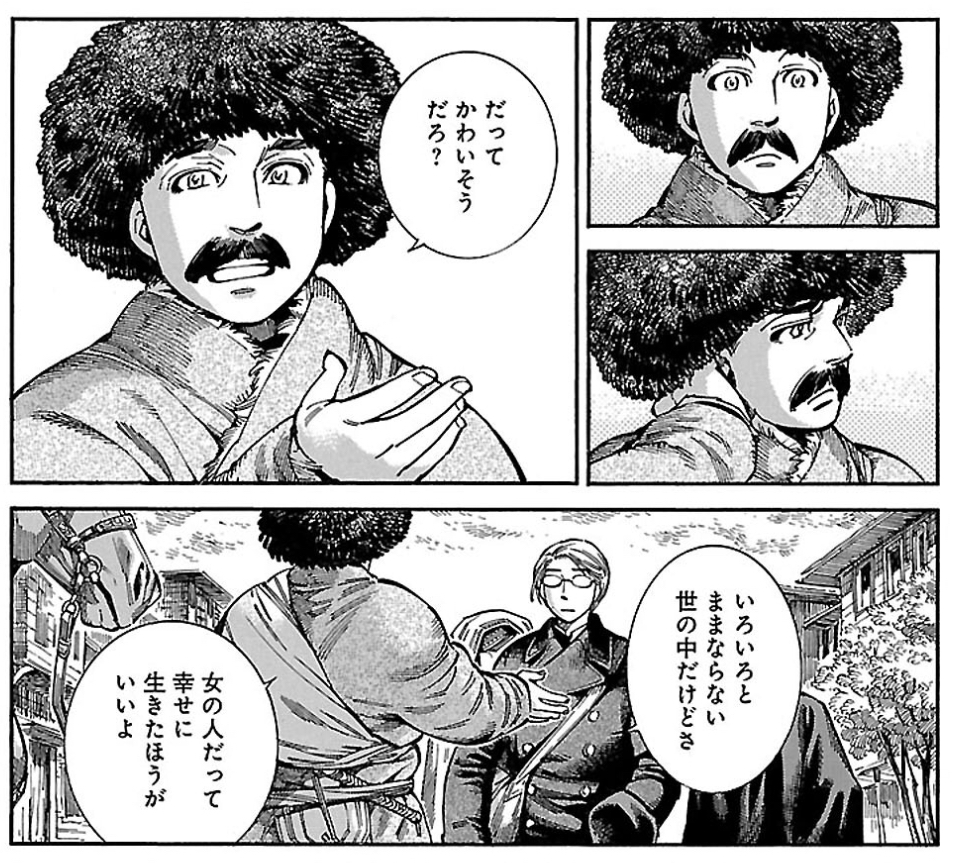
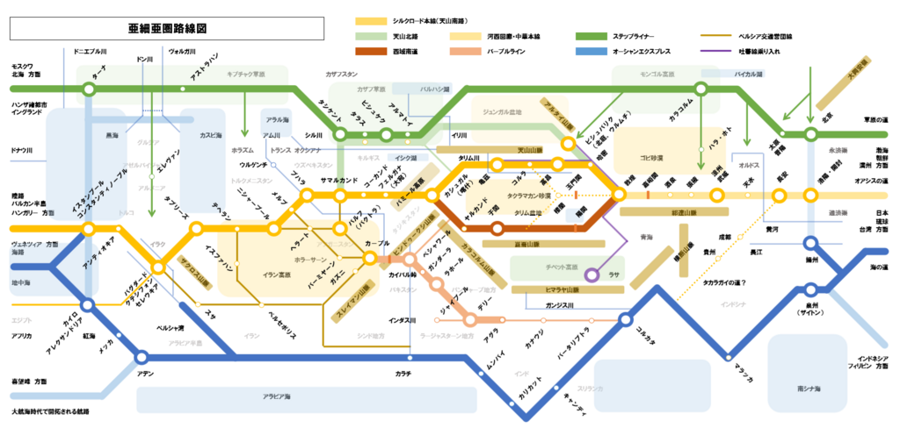
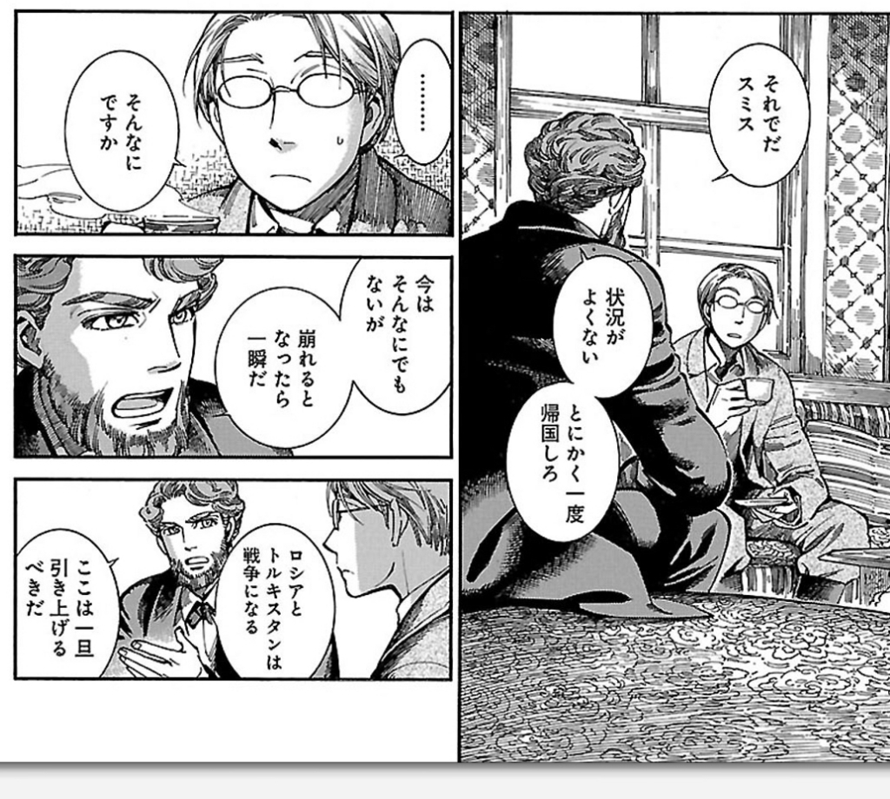

日記：『乙嫁語り』10巻＆シルクロードの路線図を Excel で作る
公開日：
")
- 作者: 森薫
- 出版社/メーカー: KADOKAWA
- 発売日: 2018/02/15
- メディア: コミック
- この商品を含むブログ (2件) を見る
『乙嫁語り』10巻！ ずっと楽しみにしていたので、仕事が終わるまで読むのを我慢するのがつらかったデス。読むまでは「カルルクとアミル、次の巻こそはヤッたかなぁ？（下素顔」などと思っていたのですが……7話（？）も収録されていたのに読むのがあっという間で、「ぇ、もう終わったの？」って感じ。読み終えたころにはすっかり魂が洗われて、彼らの行く末に幸多からんことを願うばかりの心境になっていました。イギリスとロシアがきな臭くなってきてるんだけど、どうなるんやろう……。
ちなみに、10巻の MVP はこのおっさんになりました。

ハルパゴスさん風のアクションからの、素直なやさしさ。
（注：みんな大好き、ハルパゴスさん）
こんなん、わいが女やったら惚れてまうで。スミスさんなんか放っておけよ！ ってめっちゃ思ってしまった。
それはそうと『乙嫁語り』読んでて思い出したんだけど、前に中央アジアの「路線図」を作って遊んでたの思い出した。
仕事の合間に中央アジアの地図を Excel で作るのがすっかりマイブームになった。いろいろ地図も本も Wikipedia も読んでるけど、模式化するとつじつま合わせが大変。あと、レイヤー機能ほしい（← 使い方がそもそもおかしい pic.twitter.com/PQ3YHQqO5w
— ヴァイオレット・ダルーガーデン (@daruyanagi) 2017年9月26日
残念ながらこいつにはスミスさんの目的地・アンカラを載せてなかった。アンカラは古い歴史をもつ街だけど、重要な意味を持ち始めたのはケマル・パシャの時代からだと思う。『乙嫁語り』はそのだいぶ前が舞台になってると思うのだけど……自分にはちょっとピンとこなかった。気まぐれで登場させたのか、自分の持っていたイメージよりも繁栄した街だったんだろうか。

このマップは中央アジアの本を読みながらたわむれに作ってみたのだけど、楼蘭に限らず、2000年もあれば都市の栄枯盛衰は避けられないわけで、そもそもこういう一枚の絵にまとめるのには無理があった。東西の民族移動、南北からの部族進出、気象の変化の過程で栄える町、滅びる町があり、主要な道も付けかわる。ローマみたいに建設された道ではなく、多くの人がたどる筋が道となる。シルクロードというとキャラバンが西洋と東洋を結んでいた、というイメージを抱きがちだけど、高価で軽い荷物を運ぶ直通便（マルコ・ポーロなんかは一攫千金でこっちやろな）から、穀類など重い荷物を運ぶ地域密着型の鈍行列車リレーもあった。東西の中継点だけに町があるわけでなく、南北の文化が交わる、中国でいうところの“馬市”のような役割をもつ街もあった（太原以西、草原の道にある街にそういうのが多そう）。シルクロードは横に張られた太い糸、というよりもむしろ、草原の道から海の道までの緯糸をベースに南北の地域交通が経糸が編み込まれた巨大な網のようにイメージした方がいいのかもしれない。
以下はこの絵を作るときに参考にした本だけど、誤りがあればむろん自分の責任です。どれも面白いから是非読んでみてね。『イスラーム帝国のジハード』はちょっと外れるけど、イスラーム理解には今まで読んだ中で一番役に立ったからついでに読んじゃうといいと思う。
")
興亡の世界史 スキタイと匈奴 遊牧の文明 (講談社学術文庫)
- 作者: 林俊雄
- 出版社/メーカー: 講談社
- 発売日: 2017/01/27
- メディア: Kindle版
- この商品を含むブログを見る
")
- 作者: 小杉泰
- 出版社/メーカー: 講談社
- 発売日: 2016/12/02
- メディア: Kindle版
- この商品を含むブログを見る
")
興亡の世界史 オスマン帝国５００年の平和 (講談社学術文庫)
- 作者: 林佳世子
- 出版社/メーカー: 講談社
- 発売日: 2016/05/27
- メディア: Kindle版
- この商品を含むブログを見る
")
クビライの挑戦 モンゴルによる世界史の大転回 (講談社学術文庫)
- 作者: 杉山正明
- 出版社/メーカー: 講談社
- 発売日: 2014/10/24
- メディア: Kindle版
- この商品を含むブログを見る
")
- 作者: 森安孝夫
- 出版社/メーカー: 講談社
- 発売日: 2016/03/25
- メディア: Kindle版
- この商品を含むブログを見る
")
興亡の世界史 アレクサンドロスの征服と神話 (講談社学術文庫)
- 作者: 森谷公俊
- 出版社/メーカー: 講談社
- 発売日: 2016/02/26
- メディア: Kindle版
- この商品を含むブログを見る

ちなみに「トルキスタン」というのは日本人がだいたい想像する「中央アジア」のこと。「中央アジア」は（実際に、ではなく感覚として）ヒョウタンを横に置いた感じになっていて、その一番細いところが世界の屋根・パミール高原（南はヒマラヤを挟んでインド）。そこを境に東を「東トルキスタン」（ソグディアナなど、冷戦中はソ連領になっていたところ）、西を「西トルキスタン≒中国史でいうところの西域」になっていると思えばいい。高仙芝は西域から東トルキスタンまで行ったからすげーってことなんやな。『乙嫁語り』はたぶん東トルキスタンの北の方（ウズベキスタンとかトルクメニスタン？）が舞台なんじゃないかな、知らんけど。一度行ってみたいもんだ。